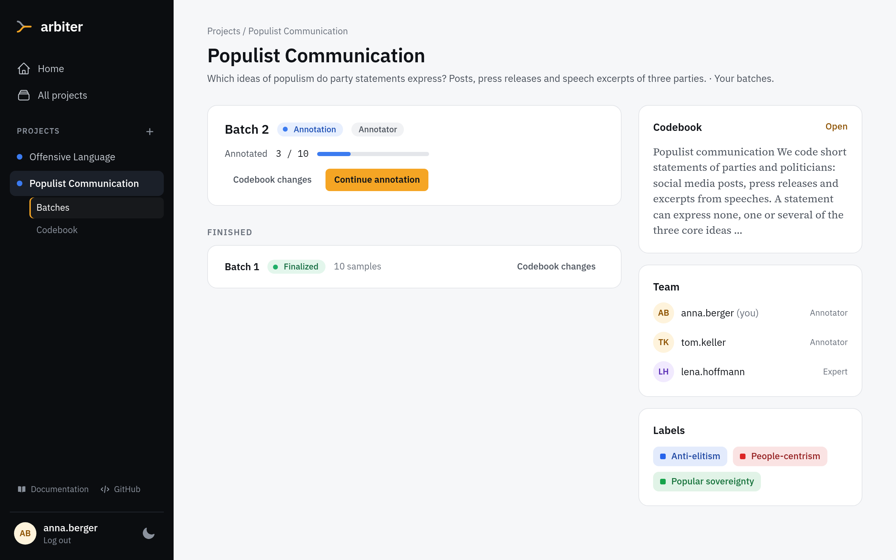
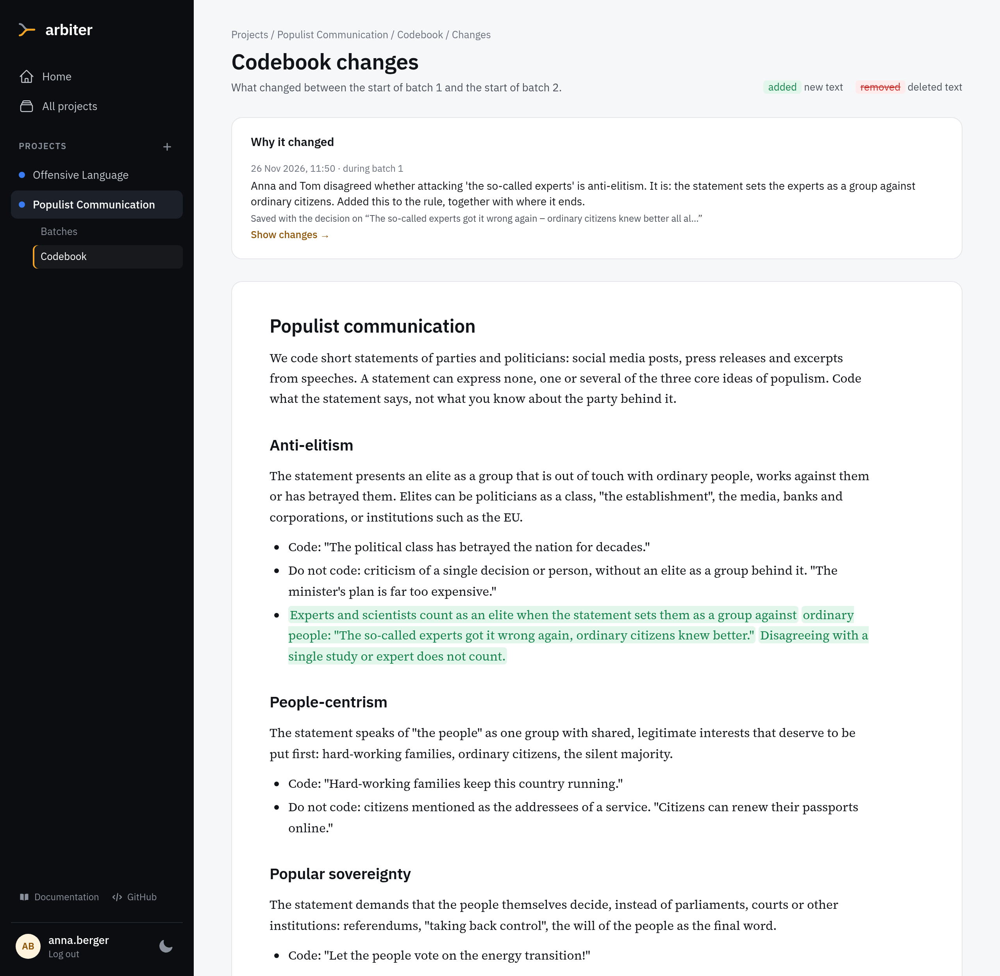
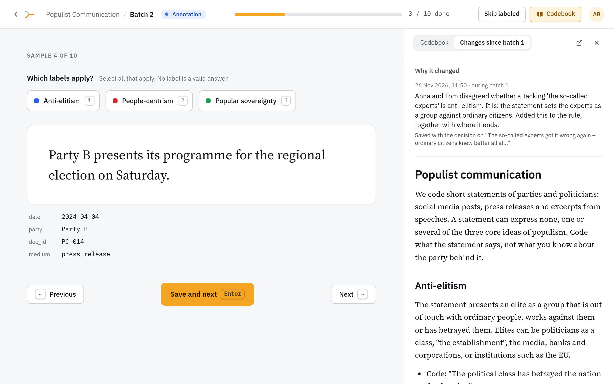
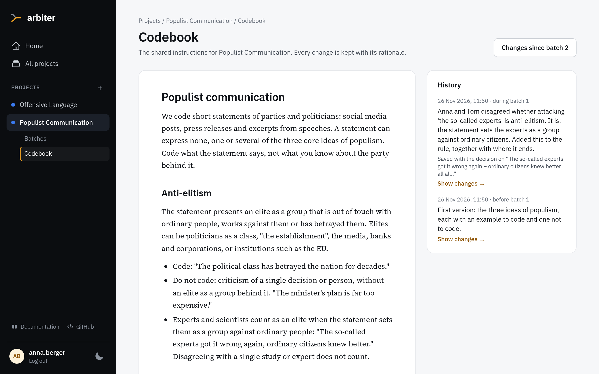

Codebook changes
The codebook changes while the project runs. Experts revise it when they decide a text you could not agree on, and whenever a rule needs to be clearer. Before you start a new batch, read what has changed since your previous one: the changes often answer exactly the cases you discussed.
Every change comes with the expert’s reason for it, so you can see not only what the rule says now, but why.
Before a new batch
On the project page, every batch has a Codebook changes button. It shows what changed between the start of the previous batch and the start of this one: what is new for you when you begin it.


The project page. Codebook changes on the card of batch 2 shows what changed before it started.
The changes page has two parts:
Why it changed lists every change in that period, newest first: when it was made, the expert’s reason and, if it came with a decision, the text that was decided. Show changes opens that one change on its own.
Below, the codebook with all changes marked: added text in green, removed text in red and struck through.


What changed before batch 2: one rule added to Anti-elitism, after a decision in batch 1.
While annotating and discussing
When the codebook has changed, the codebook panel next to the text has a second tab, Changes since batch …. It shows the same as the changes page: the reasons first, then the codebook with the changes marked.
While annotating, it shows what changed since your previous batch started.
In the discussion, it shows what changed since the current batch started, if an expert has edited the codebook in the meantime.


The Changes since batch 1 tab while annotating batch 2.
The codebook page
Codebook under the project in the sidebar opens the current codebook. On the right, History lists every change since the project began, each with its date, its reason and a link to what it changed.
Changes since batch … at the top shows what has changed since the newest batch you work in started. It helps when the codebook changes while you are still annotating.


The codebook page with the history of its changes.
Annotators read the codebook; only experts change it, see Write the codebook.